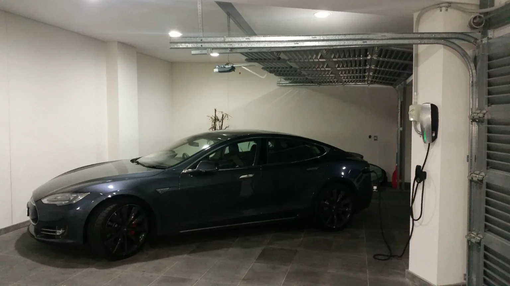
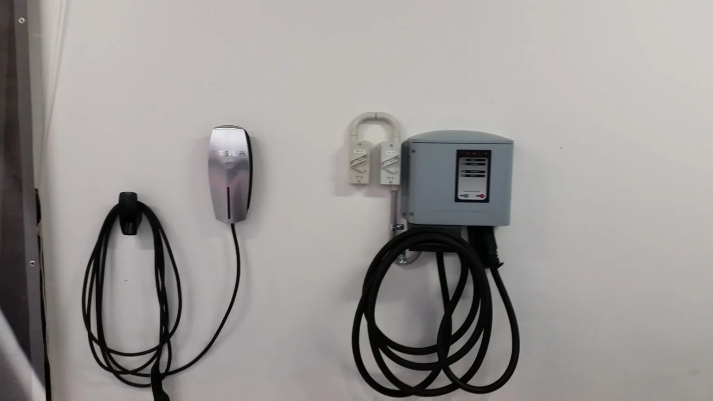
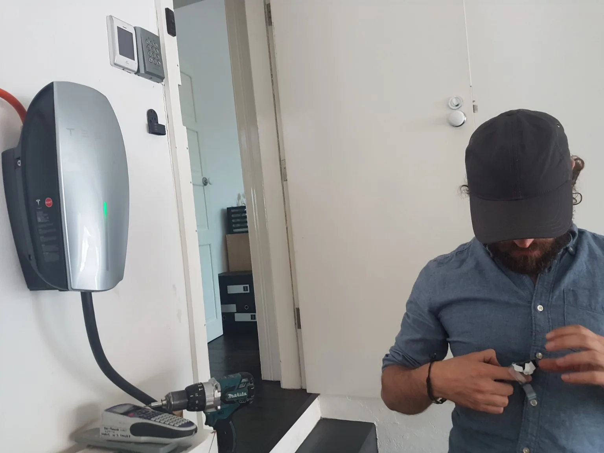

EV Charger Installation
A good charger installation starts with the electrical supply, switchboard, parking position and cable route—not simply the brand of car. We help plan safe, practical charging for local homes and selected workplace sites.
Own a charger already? Send the model and installation instructions with your enquiry so suitability can be checked.
What is involved in installing an EV charger?
The right installation considers how you park, how you use the car and what the electrical system can support. These are the main parts of the assessment.
Home wall chargers
Choose a practical wall location for the vehicle's regular parking position, lead reach, mounting surface and everyday charging routine.
Switchboard and supply assessment
Review existing supply, installed loads, protective devices, circuit space and whether more work is needed before connection.
Dedicated circuit and cable route
Plan the run from switchboard to parking area, including distances, access, fixing methods and an appropriate installation route.
Charger selection and compatibility
Consider the vehicle, charger specifications, connector, smart features and site needs; discuss owner-supplied equipment before work begins.
Load management and future plans
Where relevant, consider household demand, other large loads, multiple vehicles and suitable supported load-control arrangements.
Workplace or shared parking enquiries
Check access, supply, charging use and any additional site or strata approval considerations before committing to a design.
What should you send us first?
A few safe-to-take photos and basic details can save unnecessary back-and-forth. There is no need to diagnose your electrical supply yourself.
Vehicle and charging point
Share your vehicle model, preferred charger if known, where you park and whether the cable comfortably reaches the charge port.
Switchboard photos
A clear overall photo of the closed switchboard and labels helps initial scoping. Do not open covers or remove barriers.
Installation route
Show the path between the switchboard and parking position, noting rough distances, garage walls, obstacles and any underground route.
Other loads or future plans
Mention solar/battery systems, air conditioning, hot water, a second EV or any larger planned changes that may affect capacity.
Actual EV charger work, not stock images.
These images show earlier-generation Tesla Wall Connector equipment installed by Berryman Electrical. Modern chargers, vehicle compatibility and installation requirements are assessed afresh for each property. We do not invent suburb locations for these jobs.

A practical charger position matters.
The charging lead, vehicle position, wall mounting and electrical route should make everyday use straightforward—not create a trip hazard or an awkward connection.
Earlier-generation Tesla equipment shown. Current product choice is discussed during scoping.



From the first enquiry to a tested charging circuit.
Describe the site
Send the charger and vehicle details, switchboard photographs and parking location.
Check the installation
Assess supply capacity, circuit protection, load management needs and the proposed cable route.
Agree the scope
Confirm charger suitability, materials, access and any extra board or supply-side requirements before proceeding.
Install and test
Complete agreed electrical work, testing, commissioning steps and applicable compliance documentation.
What affects the price?
Distance and cable route, circuit protection, the board's condition, access, charger features and any required load-control or additional electrical work. We scope the actual job rather than advertising a misleading fixed installation price.
An EV charger should work with the rest of the installation.
Supply and vehicle limits matter.
Advertised charger power is not a guarantee of actual charging speed. The vehicle's onboard charging capability, existing electrical supply, design and any load-control arrangements determine the practical result.
Talk through your setupEV charger installation FAQs.
Can I install an EV charger at home in Byron Bay?
Many properties can accommodate a dedicated EV charger, but the existing electrical supply, switchboard, parking position and charger requirements need to be assessed first.
Is a 7 kW charger suitable for a single-phase house?
A single-phase wall charger may be suitable, but its practical charging rate depends on the vehicle, supply, available electrical capacity and installation design. We assess the property rather than promising a fixed rate for every home.
Do I need a switchboard upgrade for EV charging?
Not automatically. The assessment checks existing circuit protection, capacity, available space and the proposed charger's requirements. Any additional board work is explained before it is included in a quote.
Can you install a charger that I have already purchased?
We can review the model, specifications, installation instructions and suitability for the property. Installation is subject to compatibility, condition, approval and applicable requirements.
What affects the cost of an EV charger installation?
Factors include cable distance and route, wall and parking layout, circuit protection, switchboard condition, access, charger model, possible load management and any separately required electrical work. A reliable quote needs the actual scope.
Can you install EV charging at a workplace or shared property?
Selected workplace and shared-property enquiries can be assessed. Supply capacity, site access, use arrangements and any required property or strata permissions need to be established before work is agreed.
What photos should I send to get started?
Send your suburb, vehicle and charger model if known, a safe photo of the closed switchboard, the charging location and any likely cable route. No electrical covers should be opened for photos.
EV charger installation across Byron Bay and nearby Northern Rivers.
Enquiries for home and selected workplace charging in Byron Bay, Mullumbimby, Brunswick Heads and nearby areas, subject to property access, job scope and availability.
Send a charger model and a few safe photos.
Vehicle, parking position, cable route and switchboard details are a useful first step. We can discuss whether an on-site assessment is needed.